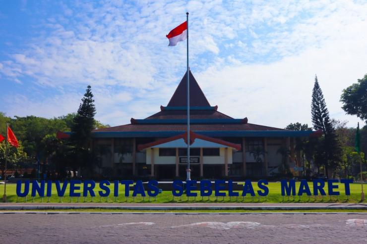
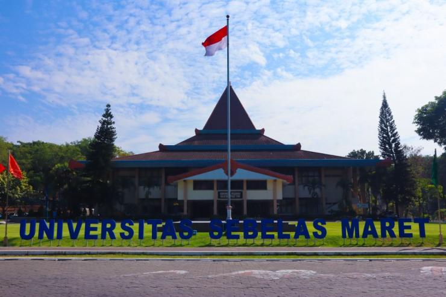

Hasil Selesksi Calon Mahasiswa Baru Jalur PMDK Program Diploma Universitas Sebelas Maret
UNS – Sebanyak 1.068 pendaftar dinyatakan lolos seleksi Penelusuran Minat Dan Kemampuan (PMDK) tahun 2020 Program Diploma Sekolah Vokasi (SV) Universitas Sebelas Maret (UNS) Surakarta yang diumumkan pada Jumat (10/4/2020). Para pendaftar yang dinyatakan lolos bisa melakukan tahapan selanjutnya yaitu pengisian biodata calon mahasiswa secara daring dengan mengunjungi laman https://spmb.uns.ac.id/biodata.
Rektor UNS, Prof. Jamal Wiwoho didampingi Wakil Rektor Bidang Akademik UNS, Prof. Ahmad Yunus, Sekretaris Eksekutif Seleksi Penerimaan Mahasiswa Baru (SPMB) UNS, Prof. Hadiwiyono dan Direktur SV UNS, Santoso Tri Hananto, M.Acc dalam jumpa pers dengan wartawan melalui daring, Jumat (10/4/2020) mengatakan, jalur PMDK tahun 2020 Program Diploma SV UNS banyak diminati oleh lulusan SMA sederajat. Terbukti pendaftar jalur PMDK tahun 2020 Program Diploma SV UNS ini sebanyak 8.837 pendaftar dengan rincian 3.969 pendaftar Saintek dan 4.868 pendaftar Soshum serta berasal dari 27 provinsi di Indonesia. Angka ini naik sebesar 15% dari 7.515 pendaftar pada tahun 2019. Bahkan jumlah pendaftar tahun 2020 ini terbanyak dalam empat tahun terakhir atau sejak tahun 2017.
“Yang dinyatakan lolos seleksi PMDK tahun 2020 Program Diploma SV UNS yaitu sebanyak 1.068 orang dengan rincian 429 orang Saintek dan 639 orang Soshum,” terang Prof. Jamal.
Prof. Jamal menambahkan, dalam PMDK tahun 2020 Program Diploma SV UNS ini, terdapat lima Program Studi (Prodi) bidang ilmu Saintek dengan Keketatan Tertinggi. Diantaranya D-3 Farmasi dengan angka keketatan tertinggi 1:16, D-4 Keselamatan dan Kesehatan Kerja 1:13, D-3 Teknik Informatika 1:13, D-3 Teknik Mesin 1:11 dan D-3 Teknik Sipil 407 46 1:9. Kemudian untuk Bidang Ilmu Soshum, juga terdapat lima Prodi dengan Keketatan Tertinggi dalam jalur PMDK Program Diploma SV UNS ini. Diantaranya D-3 Perpajakan 1:13, D-3 Manajemen Bisnis 1:12, D-3 Manajemen Administrasi 1:10, D-3 Desain Komunikasi Visual 1:9 dan D-3 Akuntansi 1:8.
Prof. Jamal mengingatkan bagi yang lolos seleksi Program Diploma SV UNS tahun 2020 untuk segera mengikuti proses selanjutnya. Untuk informasi lengkapnya bisa langsung membuka laman http://spmb.uns.ac.id/pengumuman. Terdapat tanggal-tanggal penting yang perlu dicatat untuk tahapan selanjutnya. Yaitu 11 – 16 April 2020 (sampai pukul 16:00 WIB) pengisian biodata calon mahasiswa secara daring, 17 April 2020 pukul 16:00 WIB pengumuman Uang Kuliah Tunggal (UKT) melalui http://spmb.uns.ac.id/ukt, 17 – 21 April 2020 (sampai pukul 16:00 WIB) permohonan perubahan UKT (bagi yang tidak mampu) melalui https://spmb.uns.ac.id/perubahanukt. Lalu tanggal 25 April 2020 pengumuman UKT bagi yang mengajukan perubahan, 20 – 30 April 2020 pembayaran UKT dan registrasi online (bagi yang tidak mengusulkan perubahan UKT) melalui Bank BNI, BTN, Mandiri, atau Bank Jateng, 1 – 15 Mei 2020 pengunggahan dan pengiriman berkas registrasi serta 10 Mei 2020 ujian hafalan Al Qur’an (bagi yang menyertakan
sertifikat hafidz Qur’an).
“Bagi yang belum lolos jalur PMDK Program Diploma SV UNS tahun 2020, masih bisa mengikuti seleksi melalui jalur Ujian Masuk Diploma UNS (UMD-UNS) dan Seleksi Mandiri Diploma UNS (SMD-UNS),” pungkas Prof. Jamal. Humas UNS